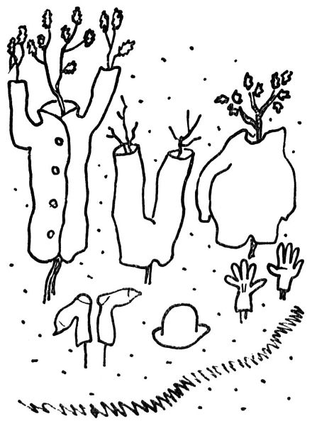
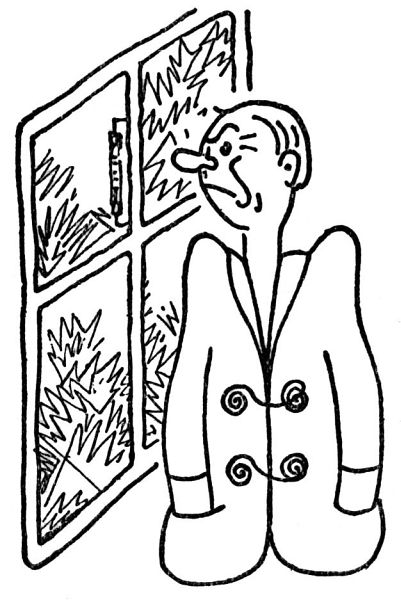

Zahradníkův leden
„Ani leden není pro zahradníka dobou nečinnosti,“ říkají zahradnické příručky. Zajisté nikoliv; neboť v lednu zahradník hlavně
pěstuje počasí.
S počasím je to totiž zvláštní věc: nikdy to s ním není v pořádku. Počasí vždycky přestřeluje na jednu nebo na druhou stranu. Teplota se nikdy nestrefí se stoletým normálem; buď je pět stupňů pod ním, nebo pět stupňů nad ním. Srážek je buď deset milimetrů pod normál, nebo dvacet milimetrů nad normál; není-li příliš sucho, je nevyhnutelně příliš mokro.
Mají-li i lidé, kterým jinak do toho nic není, tolik důvodů stěžovat si na počasí, jakpak teprve zahradník! Napadne-li málo sněhu, bručí plným právem, že to nikam nestačí; napadne-li sněhu mnoho, projevuje vážné obavy, že mu to poláme jehličiny a pěnišníky. Není-li sněhu, běduje na zhoubné holomrazy; nastane-li obleva, klne těm bláznivým větrům, které ji provázejí a mají ten hanebný zvyk, že mu rozhazují chvojí a jiný kryt po zahradě a snad mu i, hrom do nich!, polámou nějaký ten stromek. Troufá-li si v lednu zasvítit slunce, chytá se zahradník za hlavu, že mu keře poženou předčasně do mízy. Prší-li, bojí se o své alpinské kytičky; je-li sucho, myslí s bolestí na své rododendrony a andromedy. A přece by nebylo těžko mu vyhovět: stačilo by mu, kdyby od prvního do posledního ledna prostě bylo žádná celá, devět desetin stupně pod nulou, sto dvacet sedm milimetrů sněhu (lehkého a podle možnosti čerstvého), většinou oblačno, žádné nebo mírné větry západních směrů; a bylo by všechno v pořádku. Ale to je to: o nás zahradníky se nikdo nestará a nikdo se nás neptá, co by mělo být. Proto ten svět tak vypadá.
Nejhůř je zahradníkovi, když nastanou holomrazy. Tehdy země ztuhne a vyschne na kost, den za dnem a noc za nocí hlouběji; zahradník myslí na kořínky, které zamrzají v půdě mrtvé a tvrdé jako kámen; na větévky až do dřeně prozáblé suchým a ledovým větrem; na mrznoucí pupence, do kterých na podzim rostlina sbalila svých pět švestek. Kdybych věděl, že to pomůže, oblékl bych svou cesmínu do vlastního kabátu a na janovec bych navlékl své vlastní kalhoty; pro tebe svléknu svou košili, azalko pontská, tebe, dlužicho, přikreju kloboukem, a na tebe, krásnoočko, už nezbývají než mé ponožky; i vezmi zavděk.

Jsou různé lsti, jak lze vyzrát na počasí a způsobit jeho změnu. Například jakmile se rozhodnu obléknout to nejteplejší, co na sebe mám, nastane pravidelně oteplení. Obleva rovněž nastává, smluví-li se několik přátel, že pojedou na hory lyžařit. I tehdy, když někdo napíše do novin článek, ve kterém popisuje panující mrazy, zdravě omrzlé tváře, rej na kluzištích a jiné takové úkazy, dostavuje se obleva právě ve chvíli, kdy se ten článek sází v sazárně, takže jej lidé čtou, zatímco venku už zase vlažně prší a teploměr ukazuje osm nad nulou; i řekne ovšem čtenář, že v novinách je samá lež a podfuk; dejte nám s novinami pokoj. Naproti tomu sakrování, nářky, zaklínání, potahování, říkání „brrr“ a jiné inkantace[3] na počasí vlivu nemají.

Co se týče lednové vegetace, nejznámější jsou takzvané květy na skle. K jejich vybujení je třeba, abyste měli v pokoji nadýcháno aspoň trochu vodních par; je-li vzduch dokonale suchý, nevypěstujete na oknech ani mizernou jehličku, natož květy. Dále je třeba, aby okno někde špatně přiléhalo; tím směrem, kterým do okna fičí, rostou ledové květy. Proto bují spíš chudým lidem než bohatým, protože bohatým okna lépe přiléhají.
Botanicky se ledové květy vyznačují tím, že to vlastně nejsou květy, nýbrž jenom lupení. Toto lupení se podobá endivii, petrželi a listí celerovému; dále různým bodlákům z čeledi Cynarocephalae, Carduaceae, Dipsaceae, Acanthaceae, Umbelliferae a jiných; lze je srovnati s druhy: ostropes čili trubil, pupava, pcháč, notabasis, máčka, bělotrn, bodlák, štětka, světlice, paznehtník, a ještě s některými jinými bodlinatými, zpeřeně, zubatě, rozeklaně, vykrajovaně, stříhaně nebo kracovitě olistěnými bylinami; někdy se podobají kapradinám nebo palmovým listům a jindy jehličí jalovcovému; květů však nemají.
Tedy „ani leden není pro zahradníka dobou nečinnosti“, jak – zajisté jen pro útěchu – tvrdí zahradnické příručky. Především lze prý zpracovávat půdu, jelikož prý se mrazem drobí. Tu tedy hned na Nový rok se vyřítí zahradník do zahrady, aby zpracovával půdu. Pustí se do ní rýčem; po delší námaze se mu podaří zlomit rýč o půdu tvrdou jako korund. Zkusí to s motykou; činí-li to vytrvale, přerazí u ní topůrko. I chopí se krumpáče a docílí aspoň toho, že jím rozkopne cibulku tulipánu, kterou vsadil na podzim. Jediný prostředek je zpracovávat půdu dlátem a kladivem; jenže je to velmi pomalý postup, který brzo omrzí. Snad by šlo kypřit půdu dynamitem; ale ten zahradník obyčejně nemá. Dobrá, nechme to na oblevu.
A hle, je tu obleva, a zahradník se vyřítí na zahradu, aby zpracovával půdu. Po chvíli ji všechnu odnese domů, nalepenou na botách, pokud na povrchu rozmrzla; nicméně tváří se blaženě a tvrdí, že už se země otvírá. Zatím nezbývá než „dělat různé přípravné práce pro nastávající sezonu“. „Máš-li ve sklepě suché místo, připrav si květináčovou půdu, řádně míse listovku, kompost, zetlelý kravský trus a trochu písku.“ Výborně! Jenže ve sklepě je koks a uhlí; ty ženské se všude roztahují se svými hloupými domácími potřebami. Takhle v ložnici by bylo dost místa pro pěknou hromádku humusu –
„Použij zimní doby k opravám na pergole, loubí nebo besídce.“ To je pravda; jenže náhodou nemám pergolu, loubí ani besídku. „I v lednu lze klásti drn“ – jen kdyby bylo kam; snad v předsíni nebo na půdě. „Hlavně bdi nad temperaturou ve skleníku.“ Nuže, bděl bych rád, ale skleníku nemám. Tyhle zahradnické příručky člověku mnoho neřeknou.
A tedy čekat, čekat! Pane na nebi, jak je ten leden dlouhý! Jen kdyby už byl únor –
„Že se dá v únoru na zahrádce něco dělat?“
„No ba, třeba už i v březnu.“
A zatím, aniž měl o tom tušení nebo aniž se o to nějak přičinil, mu vyrazily na zahrádce krokusy a sněženky.